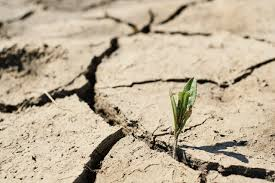

Do Campo a Cidade
- O Que o Campo Providência a cidade?
Produção de Alimentos
As atividades de agricultura e pecuária praticadas no campo, produzem uma parte considerável dos alimentos consumidos no mundo.

Recursos Naturais
Além dos alimentos o campo também oferece outros recursos como água, madeira, minérios, carne, entre outros.
Regulação climática
Por meio das atividades de agricultura o campo coopera com a regulação do clima.
